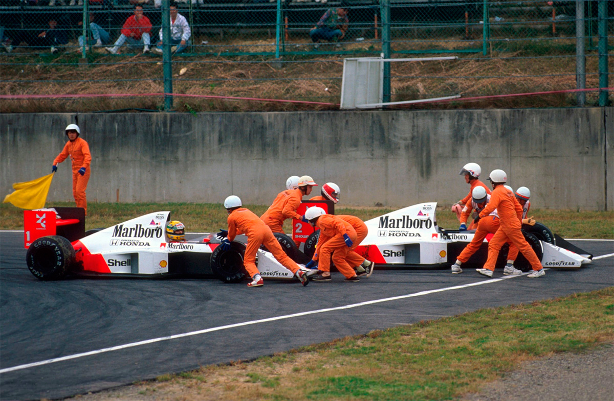
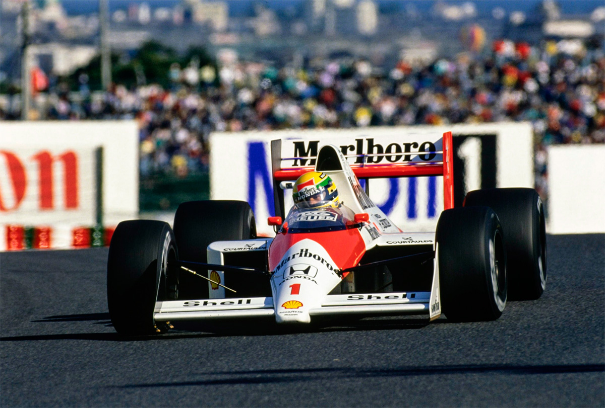
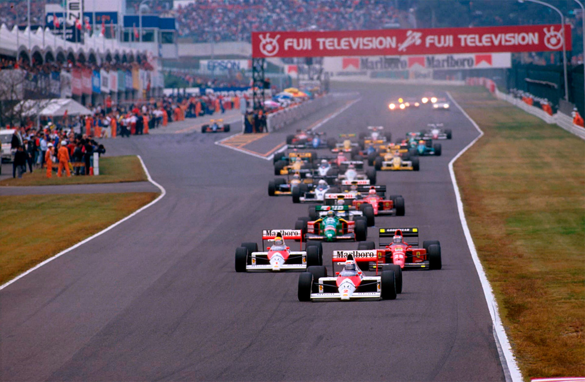
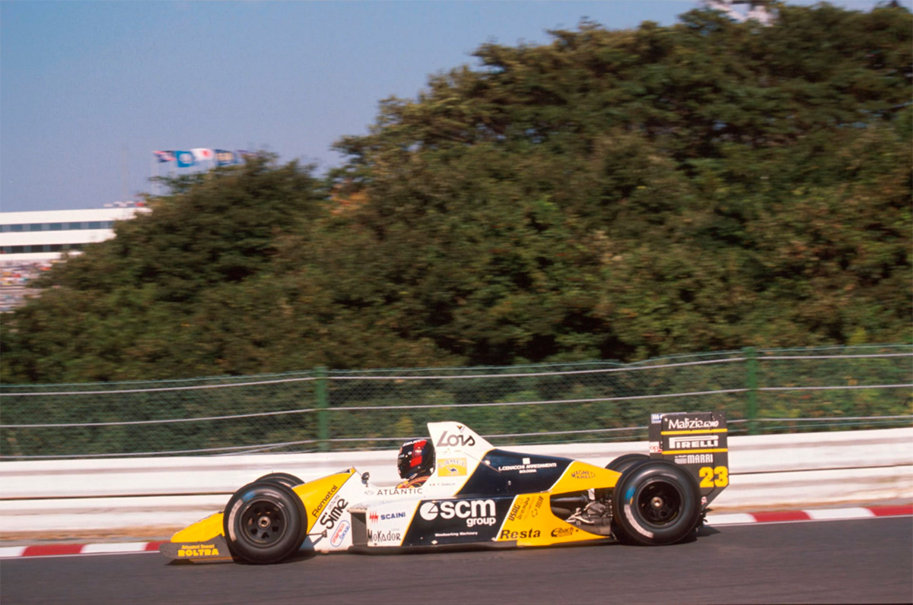
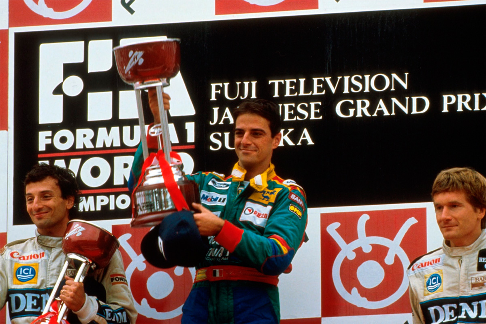

AYRTON, DESCLASSIFICADO. PROST, CAMPEÃO.
NANNINI, VENCE.

Pole fabulosa de Ayrton. Prost lidera, mas na volta 47 os dois McLaren batem. Ayrton volta, vence, mas é desclassificado. Nannini ganha seguidos dos Williams.
Francisco Santos
Embora previsível, foi realmente um final triste para um Campeonato Mundial. Infelizmente, tudo o que se passou em Suzuka teve muito a ver com o que se passou na pista, aliás, nas 15 pistas até este momento. Tudo tem de ser analisado à luz da crescente tensão entre os dois astros da McLaren. Mais infelizmente ainda para o público recorde que lotou Suzuka, que apenas vinha para aplaudir seus ídolos: Aguri Suzuki - o maior de todos -, Satoru Nakajima, Ayrton Senna ("só no Brasil tenho mais fãs") e os motores Honda. E, como os japoneses viraram "tifosi-san" dos seus ídolos da F1! Pela primeira vez, as pré-qualificações tiveram público - três vezes maior do que no dia do GP de Espanha! Uns 50.000 japoneses já esperavam ansiosamente a entrada de Aguri na manhã de 6ª feira, demonstrando bem a validade do patrocínio da Honda a Nakasan, mesmo correndo na Lotus, para manter um piloto japonês nas largadas dos GPs, e alimentar o interesse nacional pela F1. Mas, ainda não foi desta vez que Aguri passou as pré, o mesmo acontecendo pela primeira vez desde Mônaco aos dois Onyx. Quem conseguiu passar, para surpresa geral foi Bernd Schneider, pela primeira vez desde o Rio, graças a um motor demoníaco que a Yamaha instalou nos Zakspeed. A contribuição que os pneus Pirelli deram foi valiosa não só neste caso singular, como no primeiro tempo do Osella de Larini, batendo os Lamborghini. Moreno, ainda com a mesma falha de motor desde o Estoril, Lehto e Ghinzani também passaram a espectadores. Com a responsabilidade da decisão do título e de fazer calar as más-línguas francesas, McLaren e Honda fizeram um esforço redobrado. Prost e Senna tinham cinco chassis e dois tipos de motores à disposição.

Desta vez o domínio de Ayrton nos treinos foi demais: na 6ª feira foi o único piloto a baixar de 1m40s, mais rápido 1,1s que Mansell, o mais próximo. No sábado, melhorou ainda mais com o primeiro jogo de pneus de qualificação, e, com o segundo, foi além de todos os limites jamais pensados, com uma volta impressionante bateu em 2,3s todos até esse momento, o que em termos de F1 é uma diferença abismal! Nos últimos momentos, Prost baixaria o seu tempo, assegurando-se da segunda posição. Mas, a 1,7s de Ayrton. As duas primeiras filas do grid eram dos dois pares McLaren e Ferrari, mas na terceira fila não estava o par de Wiliams, como esperado. Os gurus da Ford haviam desencantado um V8 especial, com mais potência, que lhe permitia bater Boutsen para o sexto tempo, atrás de Patrese. Como vem sendo hábito, Alliot foi muito rápido no Lola-Lamborghini nos treinos, largando ao lado de Boutsen, enquanto na fila de trás, estavam Modena (abençoados pneus Pirelli) e Larini, enquanto, Alboreto continua a sua péssima fase, não se qualificando de novo. Quem faltava na frente era Martini. Claro, ele nem sequer tinha corrido. Com uma costela luxada nos treinos no Estoril e agravada com a queda em Jerez ao saber do seu melhor tempo nos treinos, foi substituído por Paolo Baril-la. Por isso, desta vez o mais rápido dos Minardi foi Sala...

Mas, no warm-up tudo se começava a desenhar. Prost era o mais rápido, seguido de Mansell e Senna, com Warwick num surpreendente quarto. Prost fez uma largada maravilhosa, saltando logo para a frente na primeira curva, e batendo Ayrton por 1.3s ao final da primeira volta. A sua vantagem foi aumentando: 2,2s, 3,2s, 3,4, até os 4,8s de liderança à 8ª volta. Era um Prost nitidamente ao ataque. Era um de seus melhores dias. A vantagem manteve-se até à 16ª volta, sempre com Berger em terceiro já bem distanciado, e Mansell em quarto, mas com problemas de seleção no câmbio e com dificuldade para se manter na frente de Nannini, apesar deste usar o motor Ford normal. Começaram então as ultrapassagens aos retardatários, e a diferença entre os dois McLaren variava conforme Prost tinha uma volta limpa, aumentando a diferença, ou havia que dobrar carros, e aí Ayrton recuperava. Vieram as paradas para troca de pneus. Mansell foi o primeiro, à 18ª volta. Prost parou a 21ª, trocando com 7,86s. Ayrton pára duas voltas depois, mas demora 8,9s, voltando à pista 4,6s atrás de Prost. Os dois Mclaren tinham regulagens diferentes: o de Prost com menos apoio aerodinâmico, andava mais nas retas, enquanto Ayrton havia escolhido uma regulagom que lhe dava maior velocidade a curva e melhor freada. Seria muito difícil uma ullrapassagem a Prost, já que nas retas ele se ia embora. Mesmo assim, Ayrton tinha que atacar ao máximo, e a partir daí sua performance lembrou o GP do Japão do ano anterior. A sua desvantagem foi diminuindo volta a volta até que à 40ª Prost só tinha 0,42s de vantagem. Mas, mesmo assim, um problema: com esta diferença do regulagens, o único ponto de possível ultrapassagem para Ayrton era a estranha chicane no final da reta, antes dos boxos, uma chicane feita em primeira marcha, e onde só cabe mesmo um só carro.

Entretanto, os dois Ferrari haviam abandonado, deixando Nannini num solitário terceiro, tão distante que havia decidido diminuir o ritmo, passando a circular 5s mais lento, para garantir mesmo a posição. Mal ele sabia que se não o tivesse feito teria poupado muitos dissabores a muita gente... A 46ª volta, Prost lidera com 0,46s de vantagem. Na volta seguinte a 47ª, que ficará na história, Prost aproxima-se da chicane, mas com uma linha nitidamente diferente (deu para ver nas imagens feitas de helicóptero), iniciando a sua entrada bem mais cedo do que o normal, e, mais do que isso (o que ficou registrado nas imagens da câmara abordo), dá uma deliberada e incomum segunda guinada com o volante para a direita, fechando ainda mais a sua aproximação na chicane. Ayrton, já tinha se aproximado mais de Prost neste local, mas, agora, talvez por isso mesmo poder constituir elemento de surpresa decide arriscar, deixando a freada para ainda mais tarde. Usa parte da pista do desaceleração para entrada dos boxes (mal colocada ali), e mergulha para ultrapassar Prost por dentro. Mas, este, naturalmente, não cede nada, e o previsto acontece: os dois McLaren se engancham e ficam parados no meio da pista com os motores desligados. O que se temia desde Mônaco finalmente acontecia!
Na volta seguinte, o airofólio dianteiro do McLaren de Ayrton, que havia batido na roda do outro McLaren cai. Ayrton entra no box, com ainda 35s de vantagem sobre Nannini. Quando volta à pista, a 4 voltas do final, Nannini está em primeiro - pela primeira vez na sua carreira -, e com 16s de vantagem. Mas, o McLaren, de bico novo, está perfeito, e Ayrton aproxima-se rapidamente do Benetton, e passa-o exatamente no mesmo lugar que tinha tentado com Prost, e a 3 voltas do fim está em primeiro. Ao receber a bandeirada, a emoção é grande. Agora só faltava Adelaide e mais uma última vitória até ao título. Mas, não. Os Comissários Desportivos o desclassificam, e nem ao pódio sobe, sendo um exaltante Nannini quem estoura a champanhe ao lado de Patrese e Boutsen.
